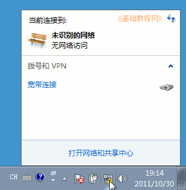

Windows7 基础入门教程
作者：TeliuTe 来源：基础教程网
十五、宽带连接 返回目录 下一课大多数家庭用户是使用ADSL宽带连接上网，我们来看一个练习；
1、创建宽带连接
1）点“开始－控制面板”，进入控制面板窗口；
2）在中间找到网络和 Internet 下边的“连接到 Internet”，点击进入，
以后可以点“控制面板－查看网络状态和任务－设置新的连接或网络”进入；
3）在出来的面板中，点击中间的“宽带(PPPoE)(R)”按钮，进入下一步；

4）在出来的对话框中，输入自己的用户名、密码，打勾“记住此密码”下次就不用输了；

5）点“连接”后稍等，出来一个提示“您已经连接到 Internet”，关闭窗口；
2、宽带连接
1）下次要上网的时候，点任务栏右边托盘里的网络图标，出来一个菜单；

2）点击上边的“宽带连接－连接”，就可以把自己的计算机连接到互联网上，；
3）在出来的连接对话框中，点左下角的“连接”按钮；
4）然后网络图标变成“已连接”的状态；
5）断开的方法是再点击网络图标，点击宽带连接里的“断开”按钮；
本节学习了设置宽带连接的基础知识，如果你成功地完成了练习，请继续学习下一课内容；
本教程由86团学校TeliuTe制作|著作权所有
基础教程网：>http://teliute.org/
美丽的校园……
转载和引用本站内容，请保留版权信息和本站链接。